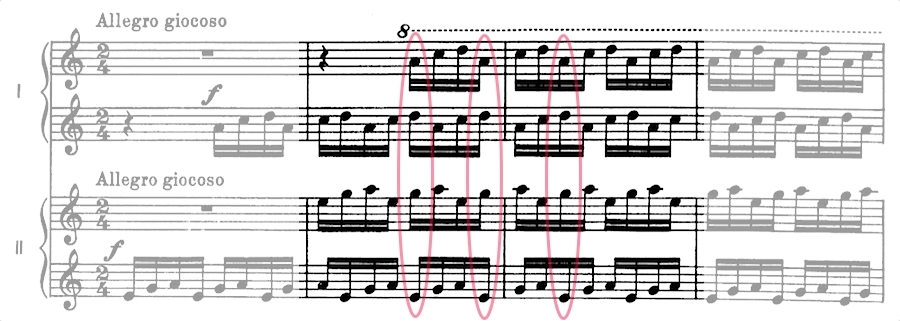
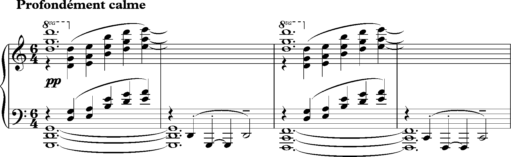

Tags:
 1. 以4度为间距叠置
1. 以4度为间距叠置
传统和弦基本上遵循 1・3・5・7 这种以“三度音程”为间距向上堆叠的逻辑。但正如我们在上一节关于“音簇”的探讨中所见，改变音符的排列方式能够开拓出一片更为广阔的创意天空。 那么，如果反其道而行之，把音与音之间的距离拉得更开会怎样呢？也就是以四度音程的间距来叠置和弦。这就是四度叠置和弦（Quartal Chord / Quartal Harmony）[1]。
2. 实践尝试
无论如何，亲耳聆听是最直观的途径。让我们通过简单的音频示范来切身体验四度叠置的声音质感。

这里完完全全只是以完全四度向上堆叠音符。这就是我们本次探索的起点。正如你所见，原本以为是 C 大调，结果降号却接二连三地增加，最终变得满是降号。这是必然的，因为以完全四度连续叠置，实质上等同于逆向环游。

由此产生的浑浊感也相当强烈，极难在其上搭配常规旋律。因此在实际运用四度叠置和弦时，通常以叠置 3 到 4 个音为基本原则。接下来我们来看几种具体的运用方式。
作为伴奏织体（Backing）
当想要从传统的调性音乐中稍微挣脱出来、营造一种焦点被虚化的朦胧声音时，四度叠置堪称绝配。

这是在爵士乐中经典的 6-2-5-1-4-7-3-6 和弦进行上，尝试使用四度叠置来进行和声伴奏的范例。由于全部声部配置（Voicing）形态高度一致，可能稍显单调，但相信声音的特质已经传达出来了。这非常接近于同时附加了大量引伸音的状态，因而带有一种轻盈漂浮的质感。
在做和声伴奏时，适度改变其与根音的位置关系会更好。例如开头 Am 的位置是 A - D - G - C 纯粹的完全四度叠置；而到了随后的 D7 处，则配置为 D - F♯ - B - E，有意制造出大三度音程。通过这种人为的微调，可以使最高音（Top note）的线条更加优美，并精准把控各个和弦微妙的色彩基调。
开头的 Am 若要准确标注和弦名称，其实是“Am7(11)omit5”。能够极其便捷地发掘出如此复杂的声响，正是四度叠置的魅力所在。
作为乐句线条（Phrasing）
四度叠置的魅力在于其独特的音响。我们甚至可以完全仅利用四度叠置来构筑乐句短句。

这是规整地仅使用完全四度叠置音符的例子。正如上一讲的音簇一样，它散发着别具一格的气氛！ 从构成音来看，它与“7sus4”有颇多相通之处，因此能够营造出鲜明的紧张悬疑感。对于像本例这种悬疑推理风格的 BGM 而言最为合适。
弦乐的最底层与贝斯同度齐奏（Unison），因此实质上是三层叠置。如果将贝斯进一步下移完全四度变为四层叠置，又会发生什么呢？请先试着想象一下其间的差异。

听起来紧张感有所减退，而阴暗压抑的氛围则进一步加重。这是因为贝斯与弦乐的最高音形成了小三度关系。虽然内声部错综复杂，但最容易被听觉捕获的最高音与最低音构成了三度音程，因此悬疑的张力被淡化，转为幽暗的色彩。
像这样，规整地叠置 3 层或 4 层完全四度是标准用法，但叠置 6 层也未尝不可，中间穿插或普通的三度同样可行。由于这种构建逻辑本就游离于基础传统音乐理论之外，在用法上并不存在死板的规则。
3. 古典音乐与四度叠置
四度叠置可以说是20世纪初近代古典音乐的重大潮流之一。事实上，众多先锋作曲家都曾积极运用过这一技法。
霍尔斯特的精妙技巧
尤其是霍尔斯特在《行星组曲》之《木星》的开头部分，便是极佳的四度叠置构思典范。
这展现出了令人惊叹、仿佛超脱尘世的美感！开头弦乐声部的层层交织正是由四度叠置和弦构成的。让我们来看乐谱：

起首并非“E-G-B”或“A-C-E”，而是“E-G-A”，已经流露出四度叠置的端倪。紧接着“A-C-D”叠置其上，而“E-G-A”与“A-C-D”之间恰好构成了四度关系！
进一步细看局部，可以发现甚至存在直接构成“E-A-D-G”四度叠置四和弦的片段。


这种独特的悬浮感，正是通过难以辨明大小调色彩的四度叠置所赋予的。
斯克里亚宾的神秘和弦
除了完全四度，也有穿插增四度的变体。这就是著名的斯克里亚宾神秘和弦（Mystic Chord）。

它散发着极其不可思议的声响。增四度与大三度的混入，增添了诡谲与明亮交织的复杂感，诞生了层次更加错综复杂的音响。在上面的音频中，先以四度叠置的方式弹奏，随后并列展示了三度叠置的弹法。构成音完全一致，但仅仅因为声部配置（Voicing）的不同，听觉体验便截然不同，这十分耐人寻味。在营造神秘意境方面，四度叠置显然更胜一筹。
斯克里亚宾在实际作品中运用该和弦的代表作之一是《第5钢琴奏鸣曲》：
Sonata no. 5, Op 53 (mm.263-264)
此外据称在《普罗米修斯：火之诗》中也有所运用。推动“Mystic Chord”一词普及的美国音乐学者阿瑟·伊格尔菲尔德·赫尔（Arthur Eaglefield Hull）所著的斯克里亚宾分析专著，可以在 Archive.org 等处查阅。
德彪西的东方色彩
连续运用完全四度时，往往会自然弥漫出一股东方民族风情。敏锐捕捉到这一特性的，正是倾心于东方音响的德彪西。

这是名作《沉没的教堂（La cathédrale engloutie）》的开头。德彪西运用四度与五度描摹出了一幅超凡脱俗的美丽图景。严格来说它更接近强力和弦的开阔空灵感……此外勋伯格、拉威尔等20世纪近代作曲家们也以各种方式广泛活用了四度叠置。
4. 爵士乐与四度叠置
在爵士乐领域，自现代爵士乐（Modern Jazz）以降，四度叠置也成为了一种重要的标志性手法。麦考伊·泰纳（McCoy Tyner）与赫比·汉考克（Herbie Hancock）皆因善用四度叠置而声名远播，它在现代爵士中早已是家常便饭。
这是引用赫比·汉考克代表作《处女航（Maiden Voyage）》前奏部分的音频。低音为 D，钢琴声部也以“D - G - C”构成三层四度叠置。这种精妙绝伦的张力正是四度叠置的力量所在。
这是迈尔斯·戴维斯的传世名作《So What》的前奏。这是一种调性感极其空灵稀薄、充满神秘色彩的伴奏织体。这种深邃感是普通传统和弦难以企及的，这同样归功于四度叠置。

原声贝斯支撑着和弦根音 D，钢琴在其上堆叠出“E - A - D - G - B”。这是一个“四度 - 四度 - 四度 - 三度”的结构队形。
在阿玛德·贾马尔（Ahmad Jamal）1970年的作品《Wave》中，从第 10 小节的“C - F - B♭”旋律开始若隐若现地浮现出四度叠置的质感，随后的第 12 小节起展开了极富戏剧张力的四度叠置钢琴伴奏。四度叠置必然带来模糊调性感的效果，因此在40年代现代爵士乐之后的时代作品中其运用尤为醒目。
5. 流行与实用场景中的四度叠置
虽然在普通的流行流行歌曲中出场机会有限，但在电子音乐、游戏音乐、电影原声中，四度叠置的契合度可谓完美。
史克威尔经典 RPG《圣剑传说2、3》配乐家菊田裕树曾公开表示自己极其偏爱四度叠置。在此引用一段他的专栏文章：
我很喜欢将极端的密集群集声部排列（Closed Voicing）与极端的开放排列（Open Voicing）结合使用。 在那种情况下，以四度和五度关系为核心构筑是我个人的鲜明特色；基本上不使用相邻的三度和弦——换言之不使用让人产生强烈调性感认知的要素。 将四度与五度折叠叠置，派生出六度和九度。在距离极远的声部之间，甚至可以置入小二度的摩擦碰撞。
学习了音乐理论并不是终点，而是以此为基石探索如何展现独一无二的个人特色。这才是对待音乐理论最理想的姿态。例如在《圣洁的侵入（聖なる侵入）》一曲中，从开头便由弦乐以四度叠置构成了三个音交织的华美旋律。
 引自菊田裕树《圣洁的侵入》
引自菊田裕树《圣洁的侵入》
为了回避增四度，F 音附上了升号，这一点也颇值得留意。
此外，将这种紧张感作为音效式运用的手法也广为人知，常用于游戏迷宫探索或战斗开场的警报感渲染。实例如《最终幻想V》的火力船 BGM，以及《陆空战纪II（四狂神战记II）》的Boss战 BGM等。
在电子音乐领域，Kraftwerk 的传世名篇 Trans-Europe Express 中象征性运用的四度叠置同样名声在外。
正是如此，根据用法与叠置方式的不同，四度叠置能够催生出极其丰富的音乐张力与延展性。将其置于伴奏和弦并在其上编织旋律是一条路径；连续运用纯四度叠置写出乐句线条是一条路径；与三度或五度穿插交融同样可行。不必被“和弦名称”这一既有框架所束缚，勇敢迈入“纯粹音程与度数的世界”吧！
总结
- 并非 1-3-5-7，而是以 1-4-7-10… 这种四度间隔堆叠的和弦称为“四度叠置和弦”。
- 四度叠置和弦调性感薄弱，散发着独特的悬空与空灵音响。
- 它没有僵化的死板规则，是一项极度考验创作者想象力与创造力的技法。